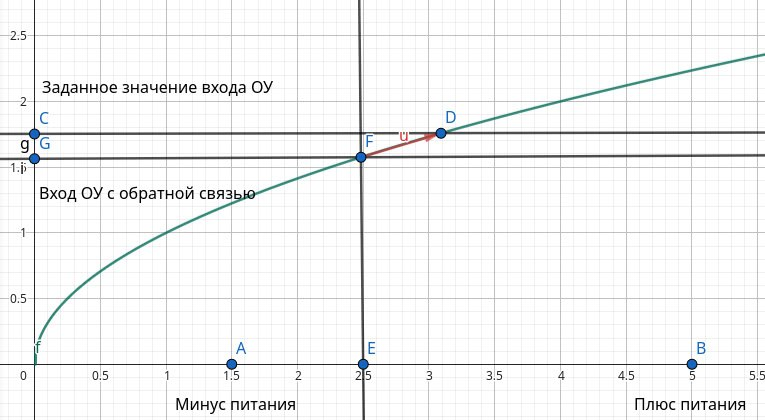
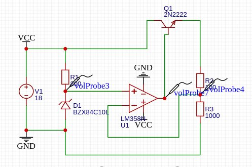

2025-09-10
00:04
После почти целого месяца прокрастинации возвращаюсь к изучению
электроники Собрал, наконец, стабилизатор напряжения на операционном
усилителе и вроде бы сформировал у себя ментальную модель его работы
Операционный усилитель имеет два входа и один выход
На один вход мы подаём некоторое заданное напряжение, а второй связываем с выходом через функцию обратной связи
Можно представить некий график функции. Здесь: C — вход с заданным значением G — вход c сигналом обратной связи от выхода E — сам выход
ОУ будет «пытаться» выбрать такое значение E, чтобы C−G≈0
Это похоже на метод наискорейшего спуска. Разность положительна — выход «ползёт» вверх, отрицательна — вниз, пока не достигнет равновесия
При этом действовать ОУ может только в пределах от A (минус питания) до B (плюс питания)
Один из входов инвертирующий (-), другой неинвертирующий (+). Выбор, к какому входу подключать обратную связь, определяется знаком наклона функции обратной связи, т.к. определяет “направление” движения точки E
#electronics #opamp

00:29
Т.е. во-первых, входы нужно подключать так, чтобы при V_+ > V_-
операционный усилитель повышал напряжение на выходе, чтобы уменьшить
ошибку и приблизиться к равновесию.
Во-вторых, нужно учесть, что искомая точка равновесия должна находиться в рабочей области выхода ОУ. Рабочая область может быть меньше, чем диапазон питания: многие ОУ не дотягивают выход до +Vcc и до −Vcc (если это не rail-to-rail тип).
В частности если здесь вместо NPN воткнуть PNP в верхней части схемы, то интересующее нас напряжение базы будет лежать где-то в диапазоне от +Vcc до (+Vcc - 0.6). Поскольку LM358 не может поднять выход до +Vcc, то требуемая рабочая точка окажется недостижимой — и PNP не будет корректно управляться.
#electronics #opamp

11:47
А ещё я, кажется, внезапно (снова) понял, как работает биполярный
транзистор (хотя теперь не уверен что понял до конца - но точно понял,
что раньше представлял себе неправильно)
До меня дошло, что в активном режиме напряжение на переходе база–эмиттер у NPN транзистора примерно фиксировано, около 0.6–0.7 В. То есть:
если Vбэ меньше порога -> транзистор закрыт если Vбэ достиг этого уровня -> переход начинает проводить, транзистор “открывается”
Дальше ток коллектора определяется током базы (через коэффициент усиления), а напряжение коллектор–эмиттер Vкэ “подстраивается само”, чтобы обеспечить этот ток Если нагрузки “не хватает”, то Vкэ вырастет - и это и есть активный режим
В схеме выше напряжение на нагрузке будет примерно равно выходному напряжению ОУ (который управляет базой) минус 0.6–0.7 В